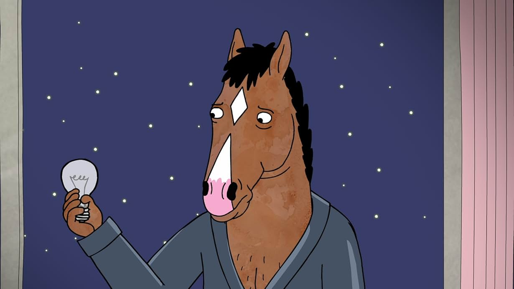
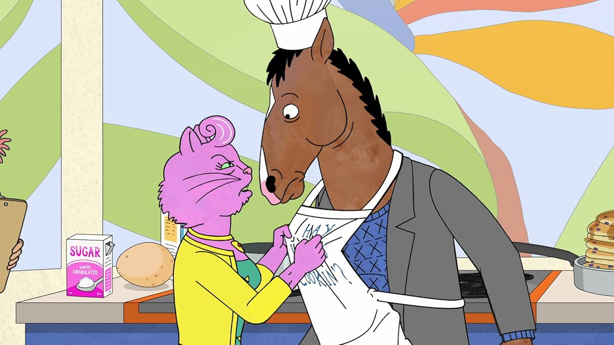
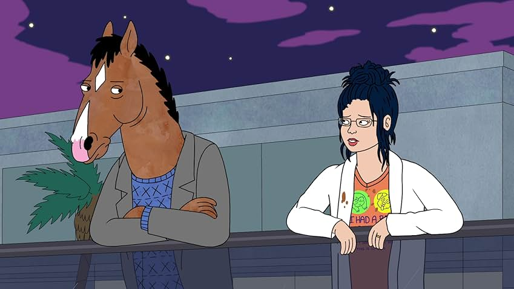

Description
A humanoid horse, BoJack Horseman -- lost in a sea of self-loathing and booze -- decides it's time for a comeback. Once the star of a '90s sitcom, in which he was the adoptive father of three orphaned kids (two girls and a boy). The show was the hottest thing around, then suddenly, was canceled. Now 18 years later, BoJack wants to regain his dignity. With the aid of a human sidekick and a feline ex-girlfriend who is his agent, he sets out to make it happen. But Hollywood is vastly different from those days, and getting used to stuff like Twitter may take some time. This first animated series from Netflix -- with plenty of references to sex, drugs and alcohol -- is not for the little ones.
Screenshots



Famous Dialogues
"Sometimes I Feel Like I Was Born With A Leak, And Any Goodness I Started With Just Slowly Spilled Out Of Me, And Now It's All Gone."
"Every Happy Ending Has The Day After The Happy Ending."
"The Rules Are Different For Women."